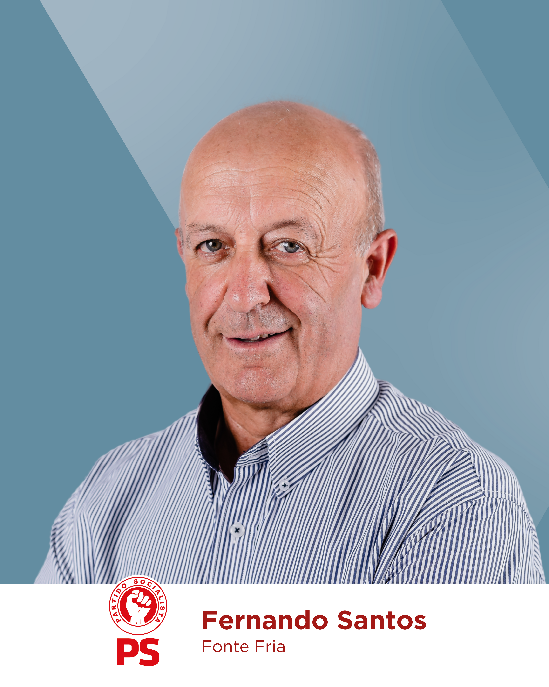
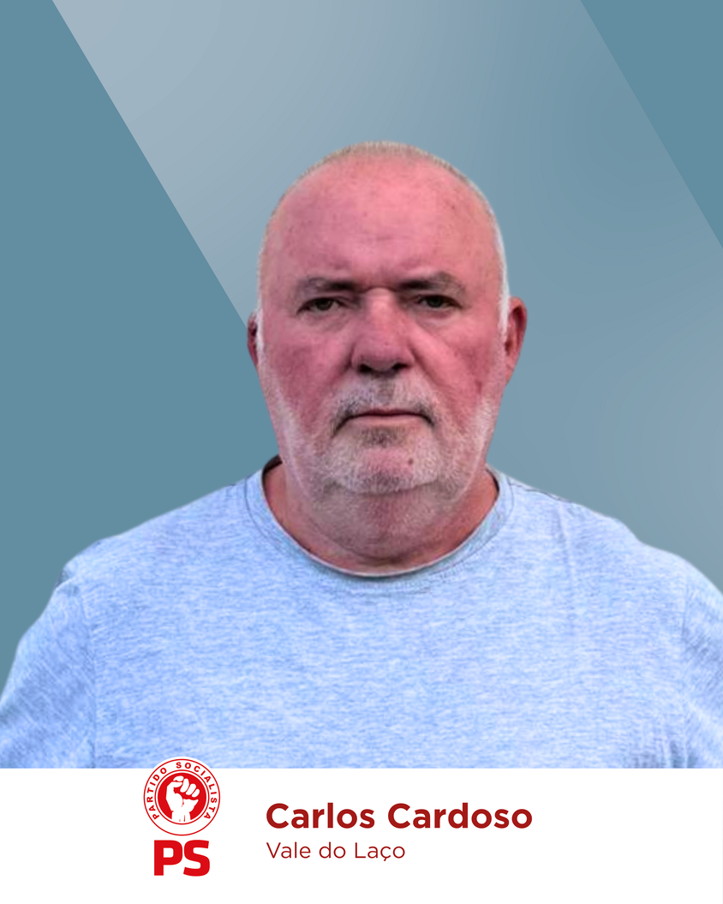
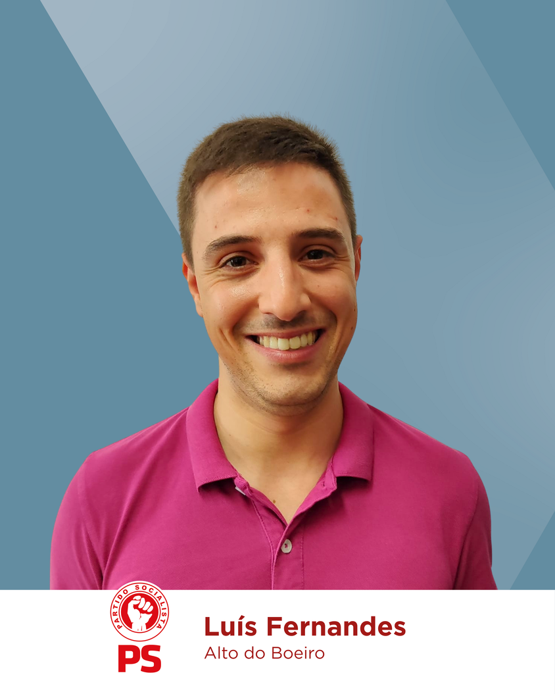
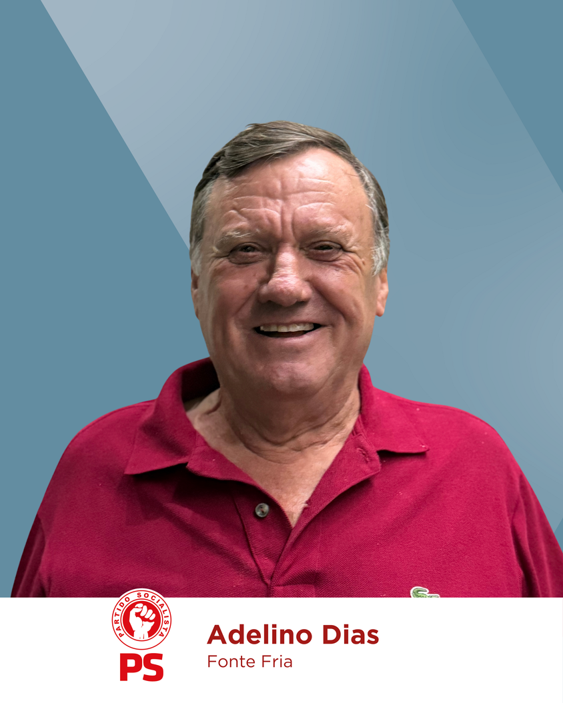

JUNTA DE FREGUESIA DO TROVISCAL
Caras e caros conterrâneos, nasci e cresci na freguesia do Troviscal, onde as minhas raízes familiares e afetivas estão profundamente ligadas à nossa terra e às nossas gentes! Aqui, aprendi os valores da proximidade, da entreajuda, do espírito comunitário e do respeito pelas nossas tradições.
É com um forte sentido de pertença, dedicação e um profundo amor à nossa terra que aceitei o desafio para me candidatar à Junta de freguesia do Troviscal.
Formei-me em Economia, pela Universidade Nova de Lisboa, com formações complementares em Marketing. Desenvolvi meu percurso profissional na área financeira, mas ao longo dos anos tive a oportunidade de adquirir não só experiência técnica, mas também competências humanas e estratégicas.
A par da vida profissional, o voluntariado e o associativismo local têm ocupado um lugar muito especial na minha vida. Fui sócia fundadora de uma associação e atualmente desempenho, com orgulho, as funções de presidente da Direção do Centro Social Recreativo e Cultural de Vale do Laço. Tenho também acompanhado de perto a realidade das várias associações locais, reconhecendo o papel único que cada uma desempenha na nossa freguesia. Estes envolvimentos sociais têm reforçado em mim o sentido de missão, cooperação e compromisso com a comunidade.
Quero colocar esta experiência e competências (académicas, profissionais e humanas) ao serviço da nossa freguesia, ouvindo cada pessoa, cada associação e cada entidade local, e assim criar soluções inovadoras e sustentáveis, e uma freguesia mais dinâmica e justa.
Ao meu lado, tenho uma equipa determinada, com novas ideias, espírito de missão e um verdadeiro compromisso com a freguesia do Troviscal. Uma equipa com pessoas de várias gerações, ligadas à terra, aos seus problemas e ao seu futuro.
Com humildade, mas também com determinação e vontade de servir, conto convosco para juntos, termos Força para Avançar!




Programa
TRANSPARÊNCIA E PROXIMIDADE
-
 Dinamizar o site da Junta e redes sociais, para partilha
de informações úteis.
Dinamizar o site da Junta e redes sociais, para partilha
de informações úteis.
-
Realizar Assembleias e Sessões de Junta, nas sedes das
associações/espaços públicos e reuniões regulares com
Associações, auscultando as necessidades e antecipando
soluções e apoios.
-
Implementar o Orçamento Participativo Jovem e criar o
Conselho Jovem da Freguesia e o Conselho Consultivo do
Emigrante.
AÇÃO SOCIAL E BEM-ESTAR
-
Dinamizar a Festa do Idoso, como momento de homenagem e
atividades para promover o envelhecimento ativo e realizar
o Dia da Freguesia.
-
Manter o apoio à natalidade; promover iniciativas para
crianças (ex: Presidente de Junta por um dia) e criar
Bolsas de Mérito para estudantes.
-
Impulsionar uma Unidade Móvel de Saúde e garantir outros
serviços básicos de saúde e bem-estar.
-
Realizar sessões com psicólogos sobre temas de saúde e
bem-estar.
-
Colocar desfibrilhadores comunitários nas aldeias com
mais habitantes (e formação) e (re)qualificar os acessos a
pessoas de mobilidade reduzida.
-
Garantir uma rede de apoio a cuidadores informais e
pessoas mais desfavorecidas (acompanhamento e
esclarecimento no Apoio Social e suporte à integração de
imigrantes).
-
Sensibilizar para a adoção e bem-estar animal.
INFRAESTRUTURAS E ACESSIBILIDADE
-
Defender o alargamento da rede de saneamento,
abastecimento de água e recuperação de fontanários.
-
(Re)qualificar arruamentos e estradas (asfalto/calçada),
de acordo com as necessidades (Carvalhal - Praia Fluvial
do Troviscal, Currais - estrada da Madeira, entre
outras).
-
Garantir um plano de limpeza/manutenção de caminhos
rurais, caminhos florestais, estradas, linhas de água,
acesso a pontos de água (e criar, se necessário) e
controlo de espécies invasoras.
-
Instalar um Multibanco no edifício da Junta.
-
Melhorar a sinalização e iluminação pública, em toda a
freguesia.
-
Criar condições estruturais, de conforto e segurança no
pavilhão da JF Troviscal, com espaços de apoio (balneário
e sanitários), para eventos desportivos e culturais.
-
Preservar e criar espaços de lazer, parque infantil e
melhorar o acesso e parque de Estacionamento da Praia
Fluvial.
INOVAÇÃO, SUSTENTABILIDADE E JUVENTUDE
-
Realizar sessões de formação digital e tecnológica.
-
Criar um espaço de coworking (antiga Primária do
Troviscal).
-
Impulsionar o Festival da Juventude, desportos na
natureza e náuticos.
-
Desenvolver projetos para a criação de espaços verdes e
ações de incêndios florestais e defesa da floresta, manter
a iniciativa “Recolha de Lixo” e reforçar o número de
ecopontos.
-
Melhorar a sustentabilidade energética nos espaços
públicos e incentivar os balcões digitais de apoio ao
cidadão.
INFRAESTRUTURAS E ACESSIBILIDADE
-
Valorizar e ampliar o PR7 (P. Fluvial Troviscal > Sertã)
e defender a criação de ecopistas e percursos pedestres ou
cicláveis, dando a conhecer os nossos recursos naturais
(ex: Ribeira da Fraga).
-
Sinalizar pontos de interesse histórico e natural com
placas e QR Codes (conteúdo multimédia e digital).
-
Reivindicar a manutenção das antigas escolas e espaços
envolventes (Escola do Carvalhal).
-
Desenvolver projetos para recuperação de moinhos
tradicionais, eiras e açudes.
-
Praia Fluvial do Troviscal: promover um serviço
qualificado e diferenciado, com um leque diversificado de
atividades, aproveitando todas as potencialidades do local
- criar memórias e experiências inesquecíveis, para que
quem nos visite queira voltar!
-
Criar pontos de venda (p.ex. na Praia Fluvial) para
produtos endógenos e artesanato, apoiando a economia local
e promover o turismo gastronómico com demonstração de
produção tradicional (queijo, vinho, filhos, ...).
-
Apoiar Comissões de Festas, Instituições/Associações,
valorizando iniciativas culturais e sociais que unam
gerações e culturas.